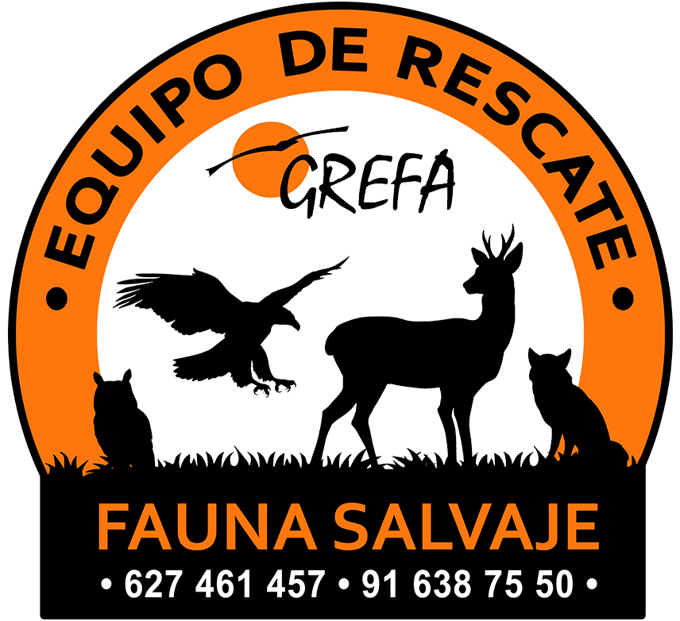
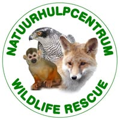
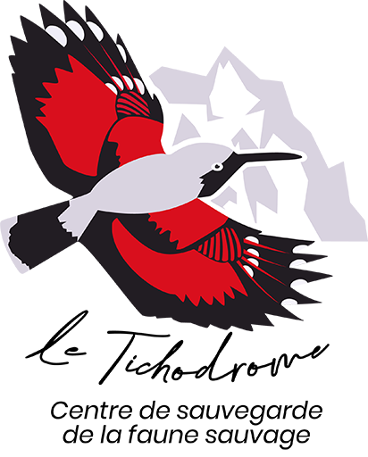
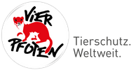
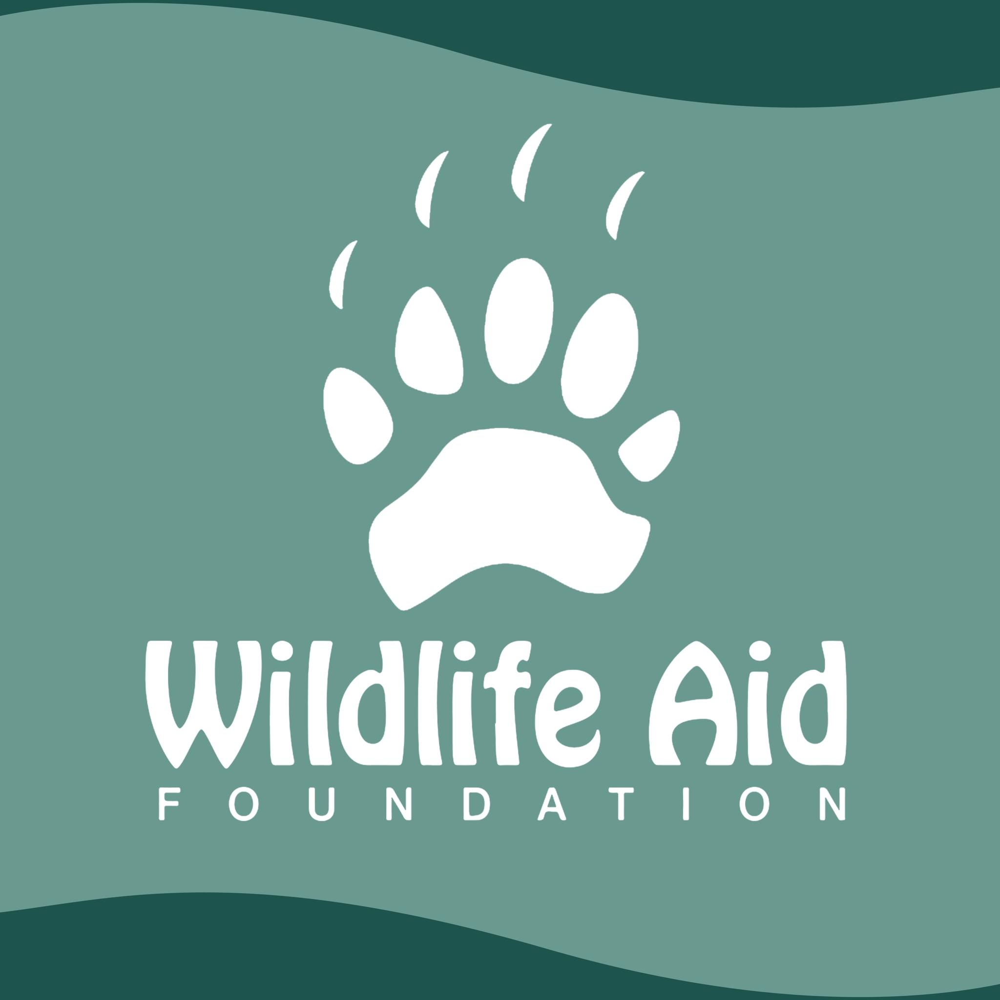
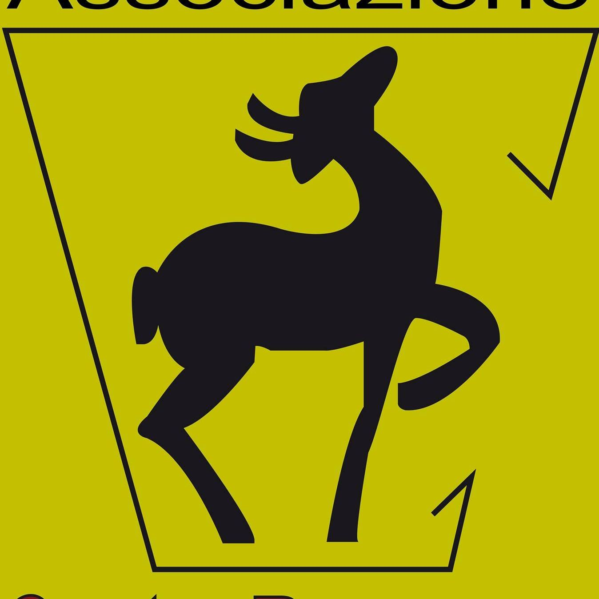

GREFA (España)
-
Madrid,
España
-
Especializado en
rapaces
-
+4,000 animales
atendidos anuales
Visitar web →

Natuurhulpcentrum (Bélgica)
-
Opglabbeek,
Bélgica
-
Mamíferos y aves
acuáticas
-
Centro de referencia
en Europa
Visitar web →

Le Tichodrome (Francia)
-
Ebersheim,
Francia
-
Aves rapaces nocturnas
-
Programas de
reintroducción
Visitar web →

Wildtierstation (Alemania)
-
Hamburgo,
Alemania
- Fauna forestal
-
Tecnología de
rehabilitación
Visitar web →

Wildlife Aid (Reino Unido)
-
Leatherhead, UK
- Fauna urbana
-
Rescates 24 horas
Visitar web →

CRAS (Italia)
-
Bernezzo,
Italia
- Fauna alpina
-
Investigación
científica
Visitar web →